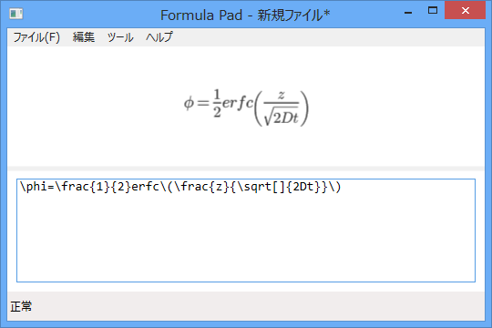
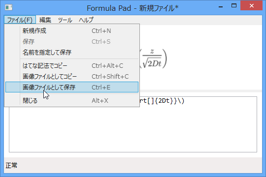

Formula Pad 1.0.1
公開日：

テキストボックスに TeX 記法で数式を入力すると、それを画像にしてくれます。数式画像はクリップボードへコピーしたり、ファイルとして保存可能。数式テキストを“はてな記法”でコピーすることもできます*1。“Google Chart API”を利用しているので、ネットワーク回線が必須。

俺得な機能として、
text = text.Replace(@"\land", @"\wedge"); text = text.Replace(@"\lor", @"\vee"); text = text.Replace(@"\lnot", @"\neg");
という処理が入っています。“Google Chart API”や“はてな”では使えない“\land（論理和）”“\lor（論理積）”“\lnot（否定）”が使えます。
動作環境
- Windows 8
- .NET Framework 4.5
そのた
このソフトは過去に作ったものを、少し手直ししたものです。ソースコードをなくしたので、一部機能が退化していますが気にしないでください。
- Google Chart を使った数式ツールを作ってみた - だるろぐ（ソースコード失くした）
- Google Chart を使った数式ツールを作ってみた（2） - だるろぐ（未実装）
- Google Chart を使った数式ツールを作ってみた（3） - だるろぐ（未実装）

その代わりと言ってはなんだけど、少しだけエラー処理してみた。BitmapImage クラスは強力すぎて謎な部分が多いなぁ。
*1:はてなでちゃんと表示できるとは限りません